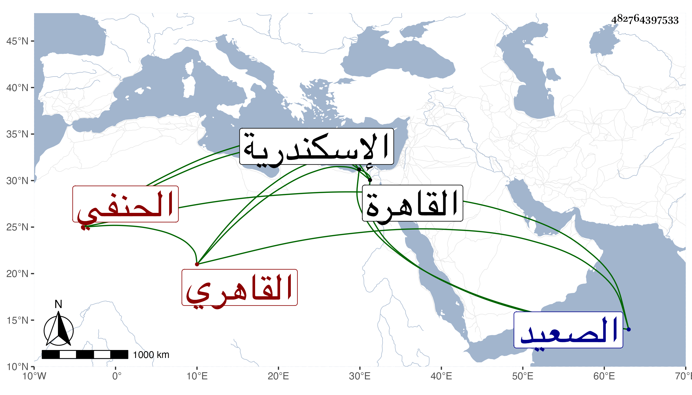

0902Sakhawi.DawLamic.ITO20230111-ara1.EIS1600.482764397533
Biography ID: 482764397533
أحمد بن عبد القادر بن محمد بن طريف بالمهملة كرغيف الشهاب بن المحيوي النشاوي بالمعجمة القاهري الحنفي أخو أم الخير وابن أخي التاج عبد الوهاب الآتيين وكذا أبوه . ولد في سنة أربع وتسعين وسبعمائة كما رأيته بخطه ويتأيد بإثبات كونه كان في الخامسة سنة تسع وتسعين ، وحينئذ فمن قال أنه في سنة ست وتسعين فقد أخطأ بالقاهرة ونشأ بها فحفظ القرآن ومقدمة أبي الليث والكثير من المجمع ، واسمع في الخامسة على ابن أبي المجد الصحيح وعلى التنوخي والعراقي والهيثمي ختمة وسمع علي الحلاوي كثيرا من مسند أحمد وعلي الهيتمي بعضه وعلى سارة ابنة التقي السبكي مشيخة ابن شاذان وغالب معجم أبيها ، وأجاز له أبو حفص البالسي وابن قوام وفاطمة ابنة المنجا وفاطمة ابنة عبد الهادي وطائفة وتنزل في صوفية الجمالية بعد الصلاحية ، ودخل الاسكندرية والصعيد ، وتكسب بعمل السراسيج وجلس لذلك ببعض الحوانيت وصار وجيها بين أربابها سيما حين يقصده الطلبة ثم أعرض عنها ولزم التقي الشمني فحضر عنده بعض دروسه ثم بعنايته قرره الجمالي ناظر الخاص بالسبيل الذي جدده بنواحي المنية إلى أن رغب عنه بعد موته وصار يرتفق مع تصوفه ببر التقي له ثم بعده ببر الطلبة ونحوهم ، وحدث بالبخاري غير مرة سمع منه الفضلاء وكذا حدث بغيره وصار بأخرة فريد الوقت وهو ممن سمعنا عليه قديما ثم صار بأخرة يكثر التردد ويلازم حضور مجلس الإملاء غالبا ، وكان خيرا قانعا باليسير محبا للطلبة صبورا عليهم متوددا إليهم حافظا لنكت ونوادر وفوائد لطيفة ذا همة وجلادة على المشي مع تقدمه في السن لكونه فيما يظهر لم يتزوج إلا بعد الأربعين ومتع بحواسه إلى أن مات في ليلة الخميس ثامن عشري ذي القعدة سنة أربع وثمانين وصلى عليه من الغد بمصلى باب النصر تقدم الناس في الصلاة الزيني زكريا وقد ناف عن التسعين ونزل الناس بموته في البخاري بالسماع المتصل درجة رحمه الله وإيانا .
